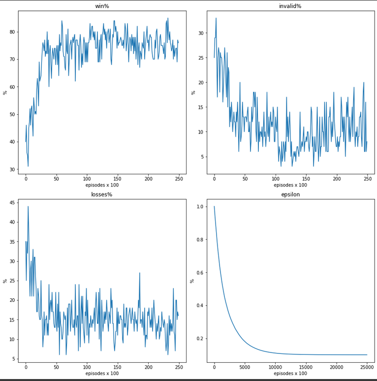

<mat-dialog-content>
    <mat-card>
        <mat-card-title>Tic-Tac-Toe and Connect-4</mat-card-title>
        <mat-card-content>This is a slight twist to the basic reinforcement learning where in this case this is a
            2-player game. To simplify the training process, I basically used a brute force method to have an agent play
            against a random agent. The training efficiency is obviously poor but it is fine with the computing power we
            have today. Thanks for Google Colab GPU option! The same agent code was used to solve both these games.
            <br>
            <p>Here is some training data for Connect-4. The 3 graphs of interest are the win%, losses% and invalid%.
                You can see that as traininig increases the win percentage increases while the losses and invalid games
                go down. Invalid games are actually a very important aspect of the agent where it learns not to make
                illegal moves.</p>
            <div class='div-image-container'>
                
            </div>
        </mat-card-content>
    </mat-card>
</mat-dialog-content>